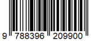

Explaining neural networks in raw Python:
lectures in Jupiter
Explaining neural networks in raw Python:
lectures in Jupiter¶
These lectures were originally given to undergraduate students of computer engineering at the Jan Kochanowski University in Kielce, Poland, and for the Kraków School of Interdisciplinary PhD Studies. They explain the very basic concepts of neural networks at a most elementary level, requiring only very rudimentary knowledge of Python, or actually any programming language. With simplicity in mind, the code for various algorithms of neural networks is written from absolute scratch, i.e. without any use of dedicated higher-level libraries. That way one can follow all the programming steps in an explicit manner.
Brevity
The text is brief (the pdf printout has ~130 pages including the appendix), so a diligent student can complete the course in a few afternoons!
Links
Jupyter Book: https://bronwojtek.github.io/neuralnets-in-raw-python/docs/index.html
pdf and codes: www.ifj.edu.pl/~broniows/nn or www.ujk.edu.pl/~broniows/nn
How to run the book codes
A major advantage of executable books is that the reader may enjoy running the source codes himself, modifying them and playing around. No downloading, installation or configuration are required. Simply go to
https://bronwojtek.github.io/neuralnets-in-raw-python/docs/index.html,
in the left menu select any chapter below the Introduction, click the “rocket” icon at the top right of the screen, and choose (preferably) “Colab” or “Binder” (which can be slow). After some initialization time the notebook can be run.
For local running, the codes for each chapter in the form of Jupyter notebooks can be downloaded by clicking the “arrow-down” icon at the top right of the screen. A complete set of files is also available from the links given above.
Appendix How to run the book codes explains step-by-step how to proceed with the local execution of the codes.
\(~\)
Built with Jupyter Book 2.0 tool set, as part of the ExecutableBookProject.
ISBN: 978-83-962099-0-0 (pdf version)
